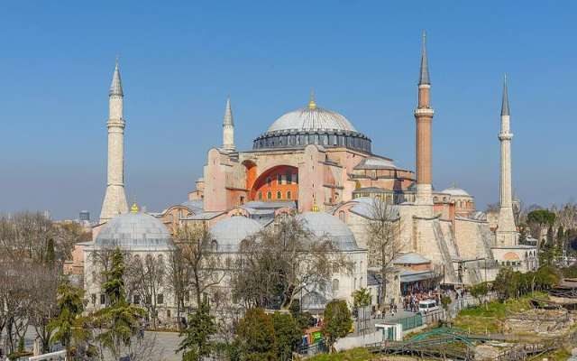

बीजान्टिन और उस्मानी राजधानी की परतों से होकर दो दिन: सुल्तानअहमत के संग्रहालय, फिर गलाता और बोस्पोरस किनारे रुमेली क़िला।
दिन 1

आया सोफ़िया इतिहास और अनुभव संग्रहालय डिजिटल कथा-वाचन और पुनर्रचनाओं के माध्यम से आया सोफ़िया के लगभग पंद्रह सदियों के इतिहास को बताता है। छठी सदी में सम्राट जस्टिनियन…

सुल्तानअहमत में अरास्ता बाज़ार के ठीक नीचे स्थित महान महल मोज़ेक संग्रहालय उस महान महल के सबसे प्रभावशाली अवशेष दिखाता है, जहाँ बीजान्टिन सम्राट सदियों तक रहे। ये…

तोपकापी महल के बाहरी बग़ीचों में गुलहाने में स्थित इस्तांबुल पुरातत्व संग्रहालय उस्मानी साम्राज्य के पहले आधुनिक संग्रहालय के रूप में स्थापित हुए। चित्रकार और…

तुर्क और इस्लामी कला संग्रहालय प्राचीन हिप्पोड्रोम के किनारे सुल्तानअहमत चौक पर इब्राहीम पाशा महल में है। सुलेमान महान के प्रधान वज़ीर इब्राहीम पाशा का यह महल इस्तांबुल…

इस्लाम में विज्ञान और प्रौद्योगिकी इतिहास संग्रहालय गुलहाने पार्क में तोपकापी महल की एक पुरानी अस्तबल-इमारत में है। विज्ञान-इतिहासकार फ़ुआत सेज़गिन के नेतृत्व में…
दिन 2

गलाता बुर्ज इस्तांबुल के क्षितिज के सबसे परिचित प्रतीकों में से एक है, जिसे 14वीं सदी में गलाता के जेनोआइयों ने अपने उपनिवेश की दीवारों के सबसे ऊँचे बिंदु के रूप में…

15वीं सदी के अंत में स्थापित गलाता मेवलेवीख़ाना इस्तांबुल का पहला मेवलेवी ख़ानक़ाह माना जाता है। इसका अष्टकोणीय लकड़ी का समाख़ाना, जहाँ दरवेश सेमा अनुष्ठान करते थे,…

रुमेली हिसारी एक भव्य क़िला है, जिसे सुल्तान मेहमद विजेता ने 1452 में — इस्तांबुल की विजय से एक साल पहले — बोस्पोरस के सबसे संकरे स्थानों में से एक पर केवल कुछ महीनों…

मेडन्स टावर उस्क्युदार के सामने एक छोटी चट्टान पर खड़ा है, जहाँ बोस्पोरस मरमरा सागर में खुलता है, और यह इस्तांबुल के सबसे रोमानी प्रतीकों में से है। इस चट्टान का उपयोग…
आपकी योजना में मदद के लिए दिन-ब-दिन तैयार मार्ग। समय अनुमानित हैं; यात्रा से पहले खुलने का समय और सड़क की स्थिति जाँच लें।